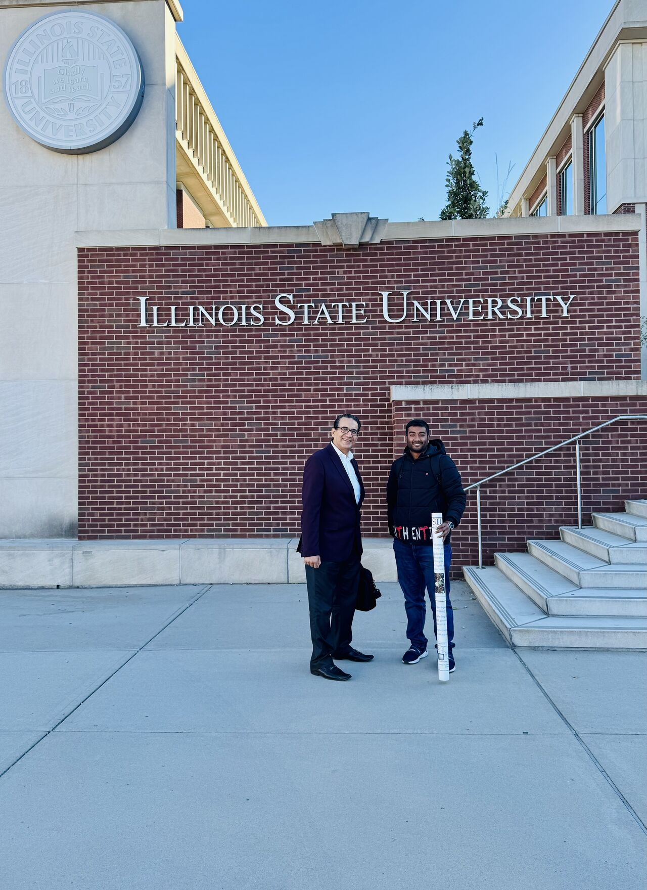
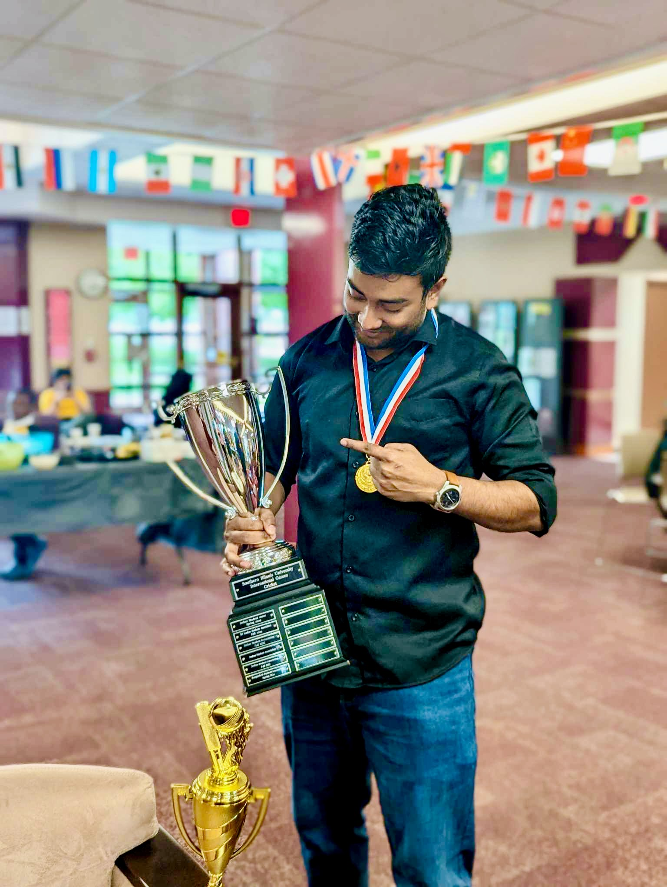
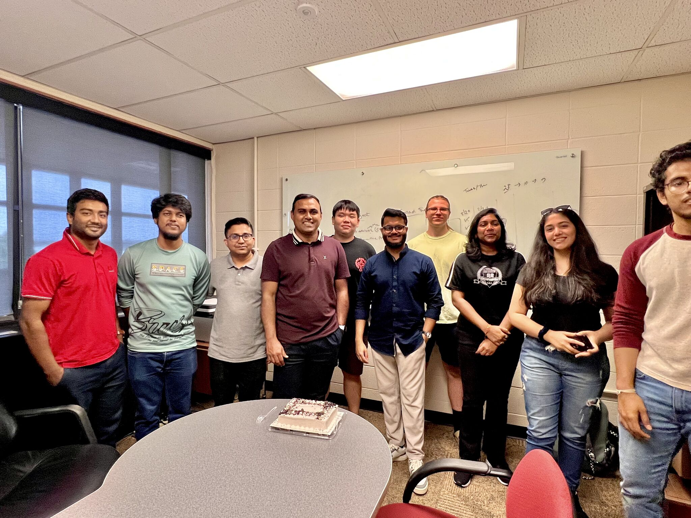
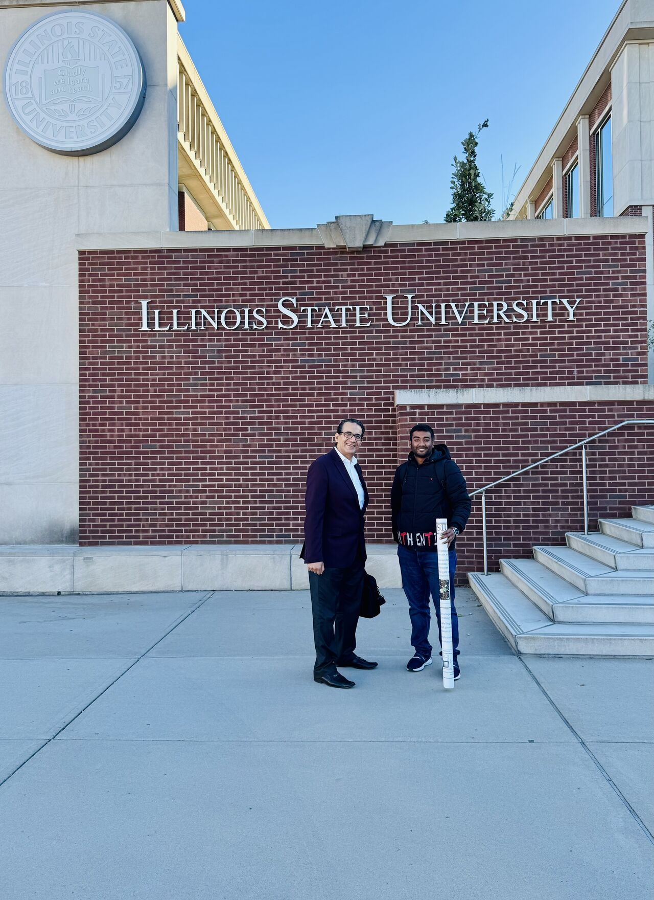
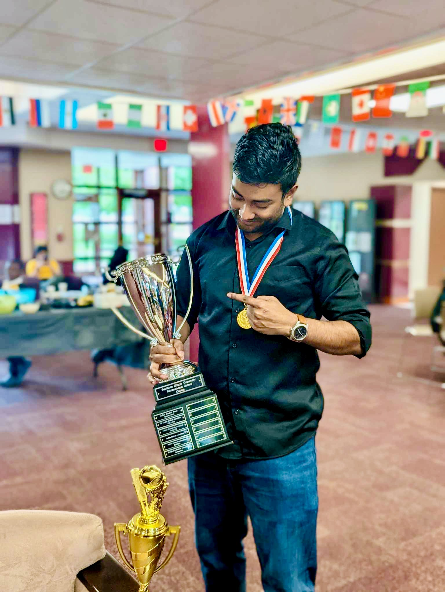
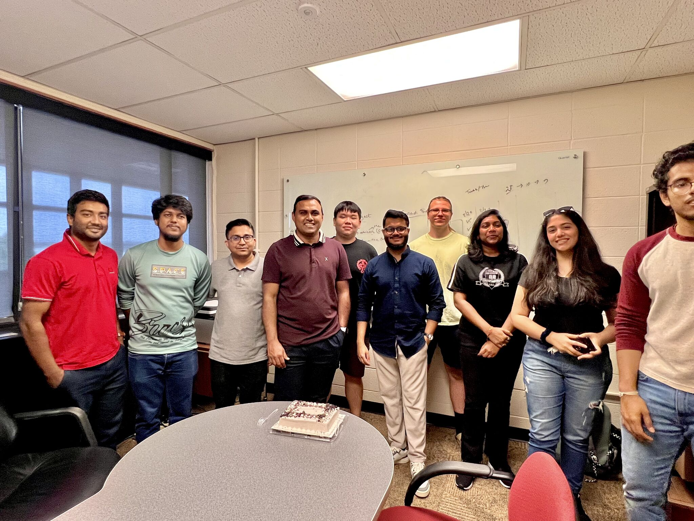

Taminul Islam
 |
Taminul Islam (he/him)
Email: taminul.islam [at] siu [dot] edu Scopus |
I am currently serving as a Research Assistant at the Big Data and Software Engineering (BASE) Research lab.
I am also pursuing my Ph.D. in Computer Science at School of Computing, Southern Illinois University Carbondale, IL, United States.
My research interest lies in the Computer Vision and Deep Learning approaches in agriculture.
Biography
Taminul Islam has received his Bachelor of Science (B.Sc.) with first-class in the field of Computer Science and Engineering (CSE) from Daffodil International University, Bangladesh. He worked as an Undergraduate Research Assistant at Daffodil International University during his student life. After graduating, he started a professional career as a Research and Development Assistant. He achieved a Full Free Scholarship in his B.Sc. program from Daffodil International University.
His research interest lies in the Computer Vision and Deep Learning approaches in healthcare and agriculture. He has already published some quality research on natural language processing, cybersecurity, healthcare, and agriculture domains in IEEE, Springer, Taylor & Francis, and Elsevier. He has also served as a Researcher in two leading research labs STEMResearch.Ai and AI-Explain You Science (AI-EYS). He reviewed articles for different journals and conferences. He has mentored almost 80 students so far in various research projects, among them 6 students have started PhD in United States. He is actively collaborating in several research projects related to computer science disciplines. He is an active professional member of ACM.
 





News
- [NOV 2024] Presented a Poster at 5th Annual Hemp Cannabis Symposium 2024
- [NOV 2024]Hitted 200 Citations on Google Scholar!
- [NOV 2024]Accepted Paper at ICMLA 2024!
- [OCT 2024] Presented a poster at the Illinois Innovation Network's Sustainability Research Conference
- [AUG 2024] Article "Detection and Classification of Cannabis Seeds Using RetinaNet and Faster R-CNN" has been published at Seeds- MDPI Journal.
- [AUG 2024] Elected as General Secretary of the Bangladesh Student Association (BSA) at SIU.
- [JUL 2024] Our paper, "Enhancing Bangla Fake News Detection Using Bidirectional Gated Recurrent Units and Deep Learning Techniques", has been published in the ACM digital library as part of the Proceedings of the 7th International Conference on Networking, Intelligent Systems and Security.